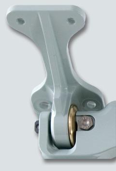
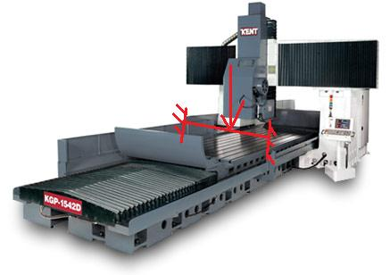
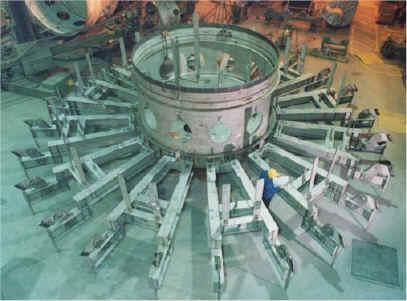
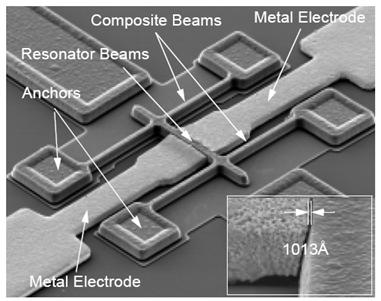
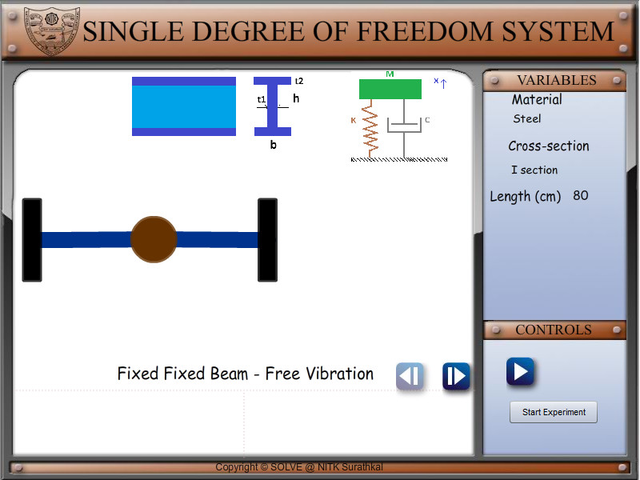
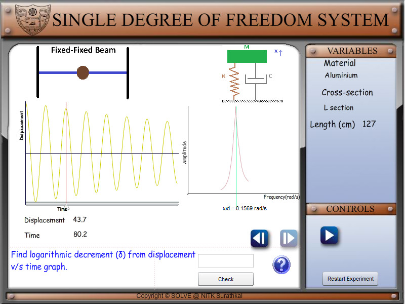
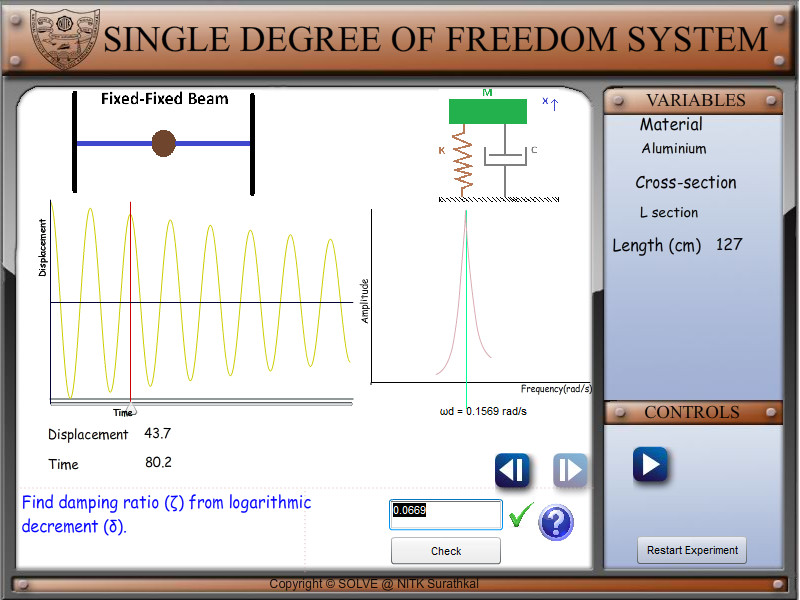
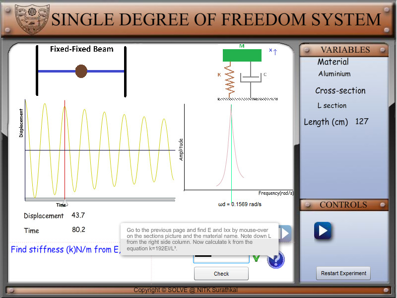
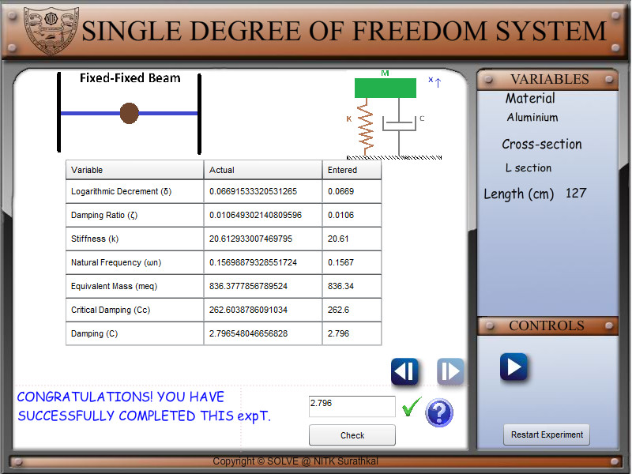

After completing this simulation experiment one should be able to Model a given real system to an equivalent simplified model of a fixed-fixed beam with suitable assumptions / idealisations Calculate the stiffness of a real system which is assumed to be equivalent of a fixed-fixed beam Determine the mass of the system actively participating in dynamics Determine the natural frequency of a given system equated to a fixed-fixed beam Determine the influence of material properties like Youngs modules (E) and density ($\rho$ ) in dynamics Determine the influence of cross section, length of fixed-fixed beam in dynamics
Introduction
A system is said to be a Fixed-Fixed beam system if it has a fixed connections at both its ends. Determining the natural frequency of any system helps us to find how the system will behave when just disturbed and left, and to find what kind of excitation frequency to be avoided in the system. Vibration analysis of a fixed-fixed beam system is important as it can explain and help us analyse a number of real life systems. The following few real system can be simplified to a fixed-fixed beam, thereby helping us make design changes accordingly for the most efficient systems. Following few figures tell us about the significance of analysing Fixed-Fixed beams and their relevance to the real world.

The above figure depicts a fixed-fixed suspension system and the pillow lock joint at its ends.
In machinery too, we can find parts which can be analysed as fixed-fixed beams like the following grinder and support sysemto a furnace.



Determining the natural frequency of any system helps us to find how the system will behave when just disturbed and left (free vibration), and to find what kind of excitation frequency to be avoided in the system. To understand the how determine the natural frequency of a fixed-fixed beam, we need to understand and calculate the following parameters. Stiffness and mass of the fixed-fixed beam We can determine the stiffness of fixed-fixed beam by a simple equation from strength of materials . $$K=\frac{\;192EI}{L^3}$$ Where K = Stiffness of system. ($\frac NM$) E = Young s Modulus of the material. ($\frac N{M^2}$) I = Area moment of inertia. ($m^4$) L = Effective length of Fixed-Fixed Beam (m) Assumptions made during modelling and analysis: The mass (M) of the whole system is considered to be lumped at the middle of the beam No energy consuming element (damping) is present in the system ie. undamped vibration The complex cross section and type of material of the real system has been simplified to equate to a simply supported beam The fundamental natural frequency $\omega_n$ , by definition is $\omega_n=\sqrt{\frac KM}$ (radians/second) Since the Fixed-Fixed beam is undergoing free vibration, the governing differential equation of the of the system considering undamped free vibration can be given by $M\overset{..}x+Kx=\;0;$ $\overset{}{\ddot x+\omega_n^2}x=0;$ Lets try to understand these equations by doing a few simple simulations, go to next tab procedure to find out how to run the simulation to EXPLORE (expR) and to EXPERIMENT (expT). A talking tutorial or a self-running demo with narration can be seen at EXPLAIN (expN)

FREE VIBRATION SDOF SYSTEM- expT PROCEDURE
AIM
:To find the damping (c) of the given beam.
PROCEDURE:
Begin
the experiment by clicking
the start experiment button

The logarithmic decrement is defined as follows.
δ
=
1
n
ln
൬
x
ଵ
x
୬
൰
Here
x
ଵ
and
x
୬
refer to the displacements at the first and n
th
peak in the displacement v/s time
graph.
The displacements at the peaks can be found using the location slider

2.
Find the
damping ratio (ζ) from
the
logarithmic decrement (δ)
.
The damping ratio is given by
ζ
=
ଵ
ට
ଵ
ା
ቀ
మ
ಘ
ಌ
ቁ

3.
Find
beam
stiffness (k) N/m from
Young’s modulus (
E
)
,
area moment of inertia (
I
)
and
length (
L
)
.
The stiffness for different beams is given below
Cantilever beam
݇
=
3
ܫܧ
ܮ
ଷ
Simply supported beam
݇
=
48
ܫܧ
ଷ
Fixed Fixed beam
݇
=
192
ܫܧ
ܮ
ଷ

FREE VIBRATION SDOF SYSTEM
-
expT PROCEDURE
4.
Find natural frequency (ω
n
) rad/s from ω
d
and ζ
.
ω
d
can found from the FFT in the graph
window.
=
ௗ
ඥ
1
−
ߞ
5.
Find equivalent mass (m
eq
) kg from ω
n
and k.
݉
=
݇
ଶ
6.
Find
critical damping (c
c
) Ns/m from m
eq
and k
.
ܿ
=
2
√
݉݇
7.
Find damping (c
) Ns/m from Cc and ζ
.
ܿ
=
ܿ
RESULT:
System damping
‘
c
’
has been found. The basic
concepts in free vibration
of SDOF systems are
covered
